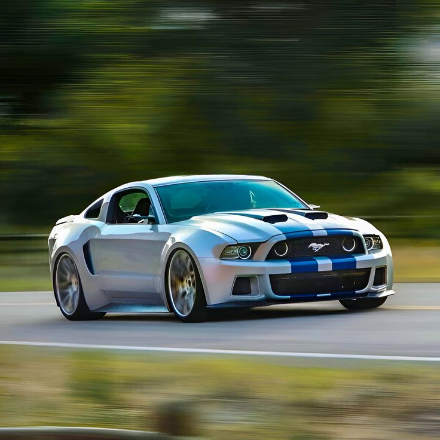

O Ford Mustang 2011 foi um ano marcante que introduziu motores mais potentes e eficientes: um 3.7L V6 (305 cv) e o icônico 5.0L V8 "Coyote" (412 cv) no GT. Ambos receberam câmbios de seis marchas e melhorias na suspensão. Disponível como cupê ou conversível, ele é elogiado pela dirigibilidade aprimorada, som do motor e, no caso do V6, boa economia de combustível.

No Video abaixo podemos ver mais sobre o ronco dessa máquina. Apenas aprecie o som dela acelerando:
Esse é o som do ronco dessa máquina subindo os giros🎧🔥
| Categoria do Motor: | Exclusividade | Origem Clássica |
| Motor V8 | Comum em Esportivos | Estados Unidos |
| Motor V10 | Raro | Alemanha / Japão | Motor V12 | Super Raro | Itália / Inglaterra |
| Categoria: | Potência Média: | Informação: |
| V8 (Aspirado) | 400 - 550 CV | Motores V8 popularizaram-se na década de 1930 e são conhecidos pelo seu ronco grave e alto torque em baixas rotações. São a verdadeira alma dos Muscle Cars americanos |
| V10 (Aspirado) | 550 - 650 CV | Você sabia que o icônico motor V10 do Lexus LFA teve sua acústica ajustada pela Yamaha para soar exatamente como um carro de Fórmula 1 de épocas passadas?! |
| V12 (Aspirado) | 700 - 850 CV | O motor V12 é o símbolo supremo da engenharia automotiva. Devido ao seu balanço natural perfeito, entrega uma potência extremamente suave e linear, marca registrada de grandes Ferraris. |
| V12 (Biturbo / Híbrido) | 1000+ CV e 100+ kgfm | "Ao adicionar turbos ou sistemas elétricos a um V12, hipercarros modernos como o Pagani Huayra ou a Ferrari LaFerrari atingem acelerações que rivalizam com jatos de caça!" |